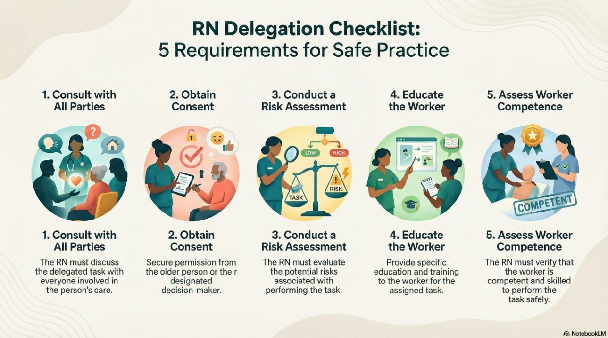
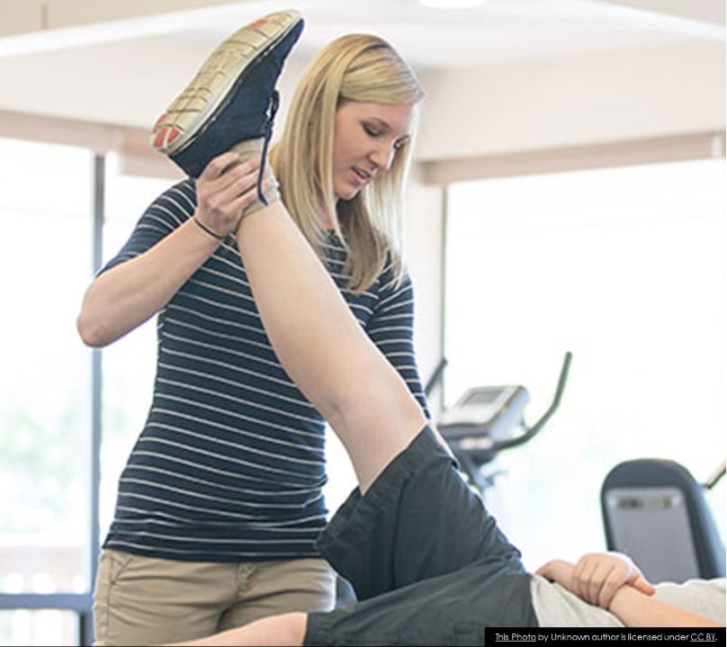
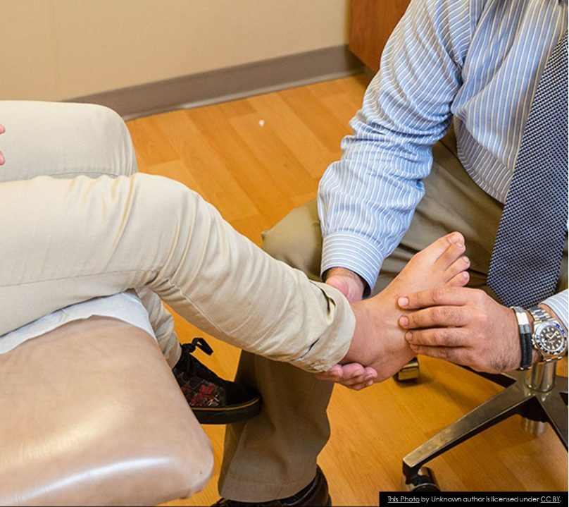
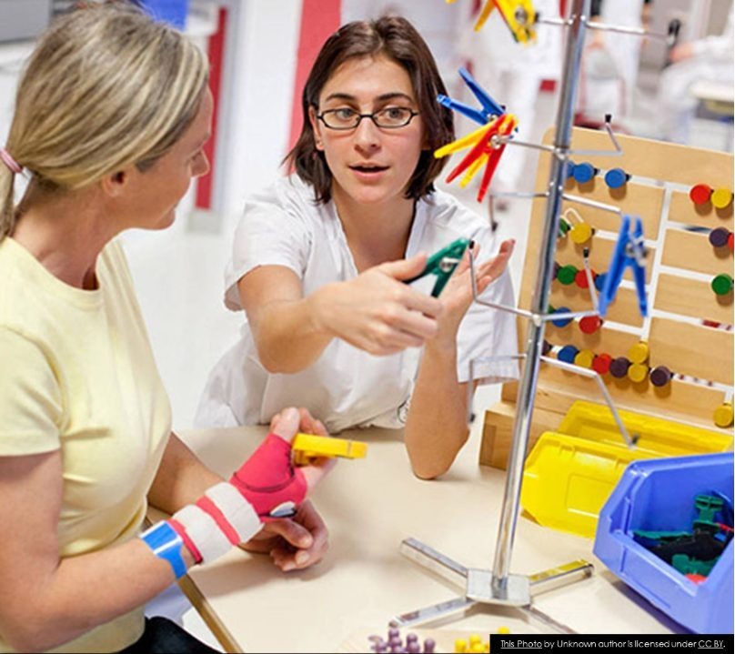
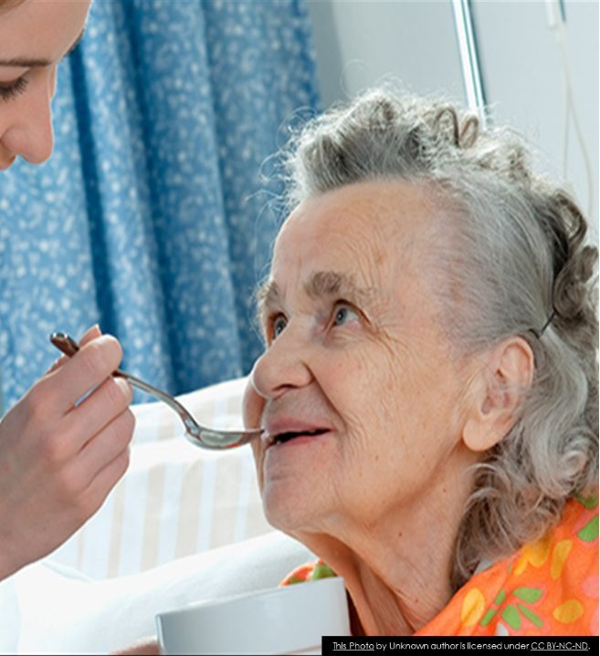
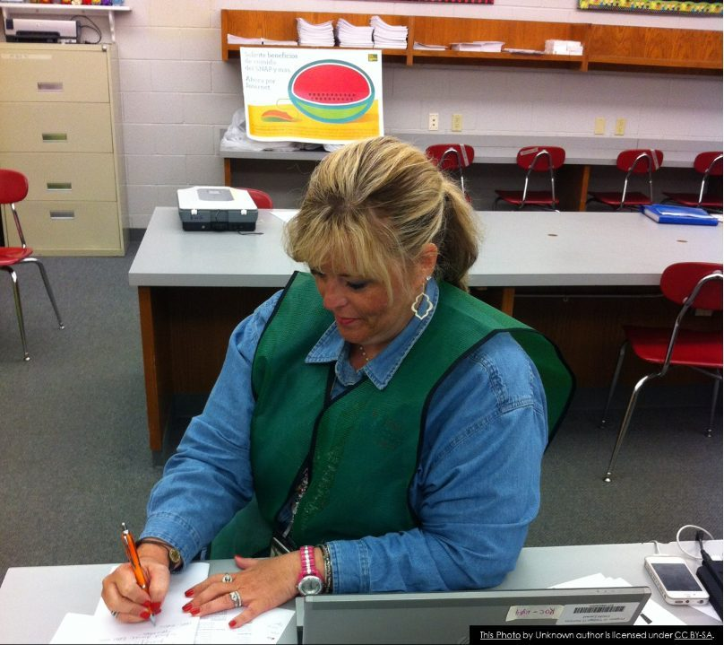
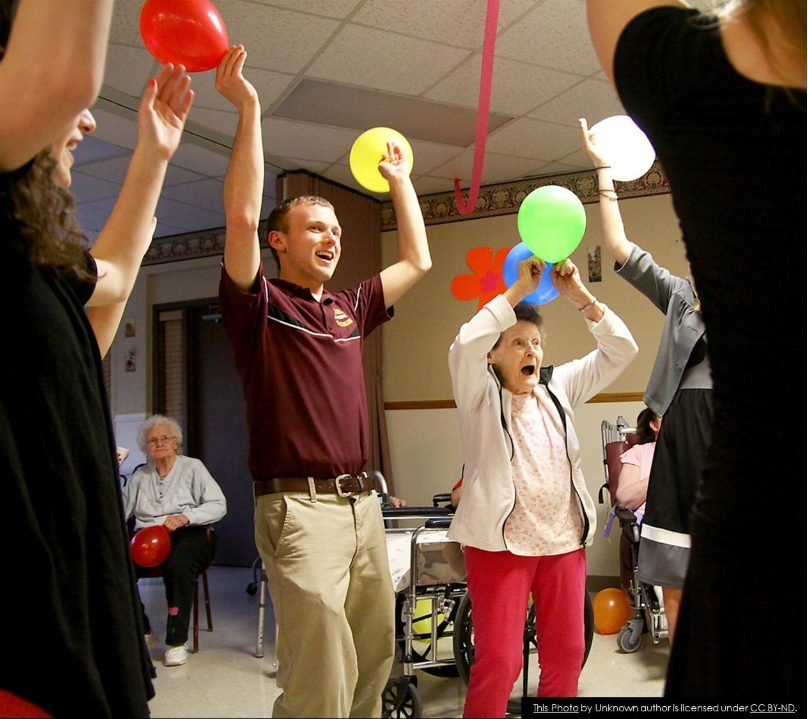
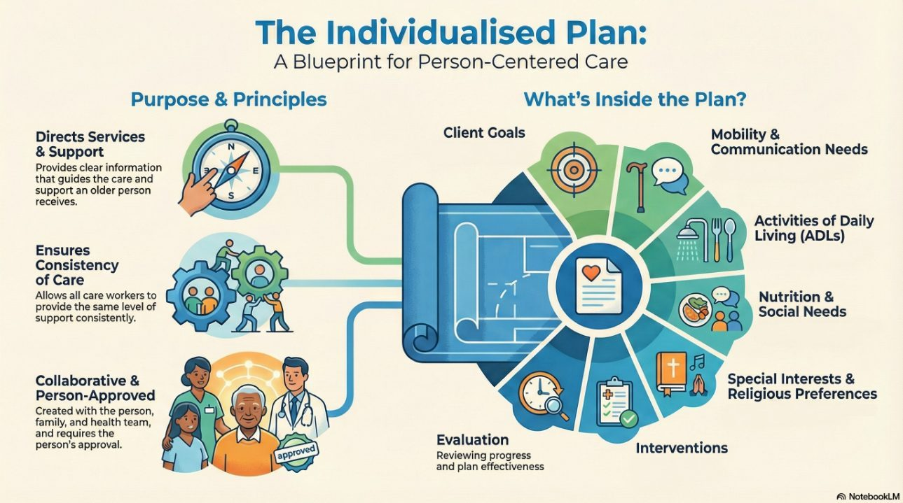

CHCAGE013 Work effectively in aged care · Lesson 5
Your role and the team
The job roles in aged care, your scope of practice, delegation, the wider team, care plans and good records.
You are part of a team. This lesson shows you who does what in aged care, what you may and may not do (your scope of practice), how nurses delegate tasks to you, and how the care plan and your notes keep everyone working together.
1 Job roles in aged care
Many workers help older people with their activities of daily living (ADLs). Each role has different training and different tasks.
Listen to the explanation
NP12 S1 P1Registered nurse (RN): gives the highest level of clinical (health) care and leads the team. Slide 2.
NP12 S1 P2Enrolled nurse (EN): works under the RN. Slide 3.
NP12 S1 P3Assistant in nursing (AIN) and health service assistant (HSA): support the nurses with simple care tasks, rehab exercises and setting up for procedures. Qualification: Certificate III in Health Services Assistance. They report to the RN.
NP12 S1 P4Lifestyle and leisure worker: plans activities like craft, bingo, music and outings, for the body and the mind.
A job description (or position description) lists the role requirements (what you need to be and know) and the duties (what you do). Here are the common ones for an aged care support worker.
Listen to the explanation
NP12 S4 P1Duties: help with a range of daily activities.
NP12 S4 P2Duties: support with self-care such as showering and dressing.
NP12 S4 P3Duties: help with laundry and household tasks (in home care also cooking, cleaning and transport to shopping or appointments).
NP12 S4 P4Duties: take part in social and recreational activities with the person.
NP12 S4 P5Duties: give social, emotional and spiritual support.
NP12 S4 P6Role requirements: good spoken and written communication, so you can help with care plan documentation.
NP12 S4 P7Role requirements: work within professional boundaries and workplace guidelines.
NP12 S4 P8Role requirements: computer skills, and being accurate with new systems.
NP12 S4 P9Role requirements: be pleasant, kind (compassionate) and keen (enthusiastic).
Your scope of practice is everything you are trained and allowed to do in your job. Some requests from a client are outside your scope.
Listen to the explanation
NP12 S5 P1Your scope includes the tasks you have been educated in and are competent (skilled) to do. It is set by professional standards and the law.
NP12 S5 P2Examples outside a support worker's scope: helping with the person's finances (money), giving advice about medicines, doing wound care or dressings, cutting toenails.
NP12 S5 P3If you are not sure what your role and responsibilities are, ask your supervisor.
Try itInside or outside your scope?
Can a support worker do this?
The notes above will blur while you try. You can peek any time.
Delegation means the RN gives the responsibility for a task to someone else, for example to you. The RN stays accountable. Before the RN can delegate, 5 requirements must be met.
Listen to the explanation
NP12 S6 P1Consultation: the RN talks with everyone involved.
NP12 S6 P2Consent: from the older person, or their decision maker.
NP12 S6 P3A risk assessment of the task.
NP12 S6 P4Education: the RN teaches the worker how to do this task, for this person.
NP12 S6 P5Competence: the RN checks that the worker can do the task safely.
NP12 S6 P6After this, the RN also supervises the worker when they do the task.

Click the picture to see it full screen.
Try itConsult, consent, risk, teach, check
Put the five requirements in order.
The notes above will blur while you try. You can peek any time.
Two different situations. Two different answers. You are responsible for telling the RN.
Listen to the explanation
NP12 S7 P1You do not feel competent (skilled or confident) for a task the RN delegates: tell the RN you do not feel competent, and ask for more training before you try the task.
NP12 S7 P2The task is outside your scope of practice: tell the RN it is outside your scope, and that you cannot do it.
Watch out Write two separate answers. Not competent = ask for training. Outside scope = say you cannot do it.
Try itWhat do you say to the RN?
Choose the best answer.
The notes above will blur while you try. You can peek any time.
The interdisciplinary team is the group of health workers from different professions who support the older person. Flip the cards.
Listen to the explanation
Physiotherapist

Assesses the person and helps with exercise programs and hands-on therapy for problems with muscles and joints, the nerves and brain, and breathing.
Podiatrist

Assesses and cares for feet: trims toenails, suggests the right footwear, and manages foot problems, especially with diabetes and arthritis.
Occupational therapist (OT)

Helps the person learn new ways to do personal care and daily activities after an injury or illness, finds the right equipment, and suggests changes to the home.
Speech pathologist

Works with people who have trouble with swallowing, communication, speech or language, because of ageing, injury or illness.
Social worker

Gives counselling, or refers the person to other specialists, to help them manage social or personal problems.
Dietician
Gives advice on diet, nutrition, supplements and menu planning to improve health, and helps manage conditions like diabetes, obesity, food intolerances and allergies.
Lifestyle and leisure worker

Works with volunteers and therapists to plan and run programs people can choose to join: gentle exercise, craft, music and other activities.
Try itWho am I?
Match each job to the team member.
The notes above will blur while you try. You can peek any time.
You will support people from many cultures, beliefs and backgrounds. Being culturally competent helps you do this well.
Listen to the explanation
NP12 S9 P1Cultural competence means being able to work and live well with people from other cultures, at work and in your personal life.
NP12 S9 P2First, know your own culture and values.
NP12 S9 P3Then respect other people's cultures too.
NP12 S9 P4Value the differences: they bring a variety of life experiences.
NP12 S9 P5Example: a resident may want a carer of the same gender for showering, or may not eat certain foods, or may want to pray at certain times. You find out, and you respect it.
Watch: Cultural Competence
Watch: Respecting the differences between people (TEDx) (Mariana Chartier)
Every person has their own individualised plan (also called a care plan or support plan). You do not write it, but you must read it and follow it.
Listen to the explanation
NP12 S10 P1Purpose: the plan directs the services and support the person needs, and it makes sure every worker gives the same support (consistency).
NP12 S10 P2It is made together with the older person, their family, the doctor, nurses and other health professionals. It must show the older person's own views and wishes.
NP12 S10 P3The older person must approve the plan before it is used.
NP12 S10 P4Key areas in a plan: personal information, client goals, special interests, interventions (what will be done), evaluation (checking how it is going), mobility needs, communication needs, activities of daily living, nutrition, social needs and religious preferences.
NP12 S10 P5Goals and evaluation must always be in the plan. The plan is reviewed and changed when the person's needs change.
NP12 S10 P6If you notice that a goal has been reached, or a new need, tell your supervisor so the plan can be updated.

Click the picture to see it full screen.
Watch out When you list five key areas, client goals and evaluation must be two of them.
Try itPlan check
Choose the best answer.
The notes above will blur while you try. You can peek any time.
Documentation means writing down what you did and what you saw. It can be on paper or on a computer.
Listen to the explanation
NP12 S11 P1Good notes are clear, concise (short), legible (easy to read), accurate (correct), and they meet legal requirements.
NP12 S11 P2Write about changes in the person and anything you noticed or checked.
NP12 S11 P3Write facts: what you saw and heard, and the person's own words in quotation marks. Do not write your opinion or guesses.
NP12 S11 P4Why it matters: everyone knows the person's current needs, the team gives the same care, changes are reported quickly, and there is proof the care was given.
NP12 S11 P5Good records protect you if there is ever a legal problem. The Strengthened Standards require them too.
NP12 S11 P6Not sure how to write something? Ask your supervisor.
Try itFact or opinion?
Good notes only use facts. Sort each sentence.
The notes above will blur while you try. You can peek any time.